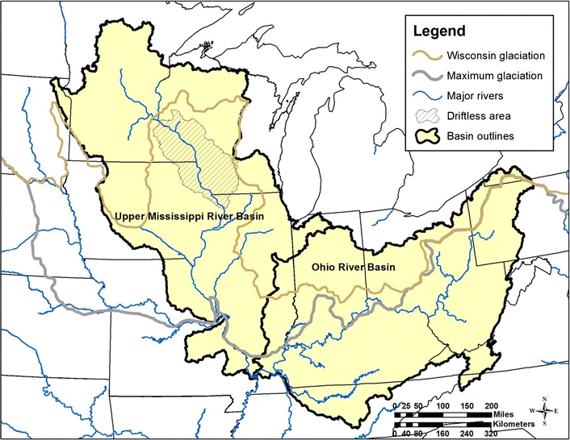
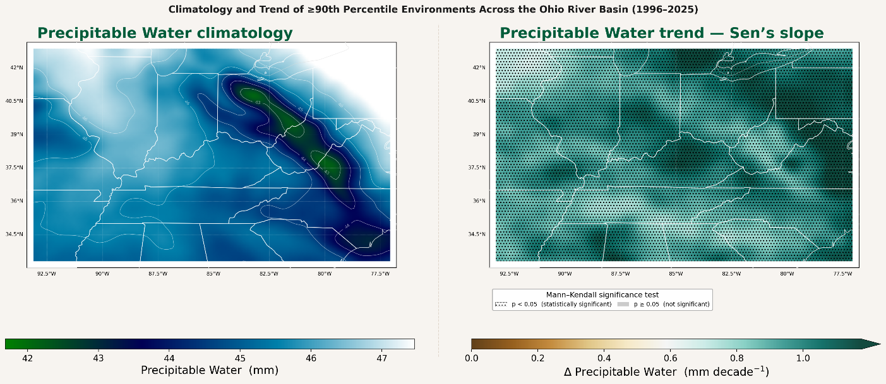
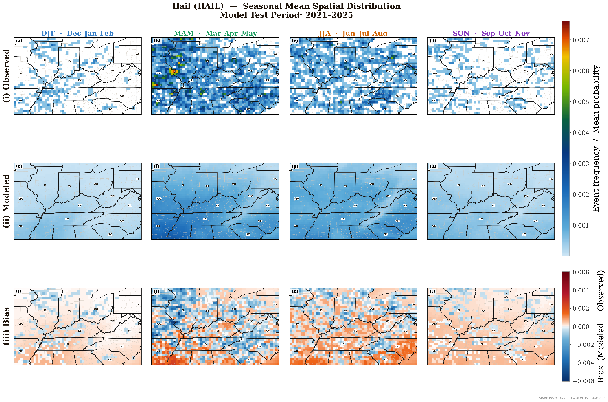
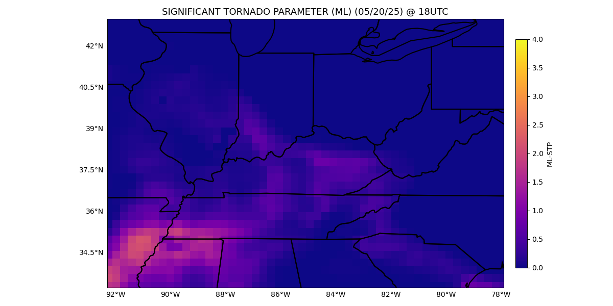

Pinkrah Nana Ofosuhene; Dr. Xingang Fan; Dr. Zachary J. Suriano; Dr. Manmeet Singh
Current M.S. thesis research.
Quantify the climatology, spatial patterns, and temporal trends of severe-storm environments across the Ohio River Basin.
ERA5 reanalysis, NOAA Storm Events, and dynamically downscaled CMIP6 simulations under SSP4.5.
Severe-storm diagnostics, event-environment matching, ERA5-CMIP6 evaluation, and Random Forest classification.

Ohio River Basin study region.

Environmental parameters used to characterize severe-storm-supportive environments.

Tornado probability maps from the severe-storm environment workflow.

Significant Tornado Parameter diagnostic over the study domain.
Severe convective storms are driven by the interplay of atmospheric instability, moisture, and vertical wind shear. This project evaluates how storm-supportive environments have varied historically and how they may evolve under future climate forcing across the Ohio River Basin.